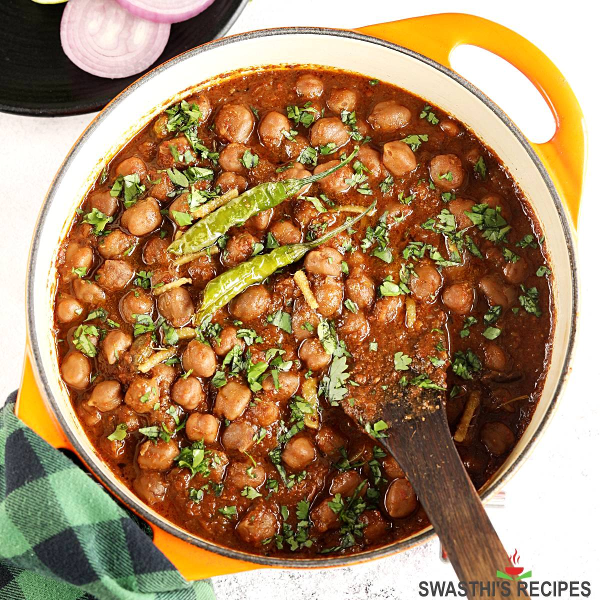

Chole Masala
Home

Description
Chole Masala is a spicy and tangy North Indian curry made with chickpeas (chana) cooked in a flavorful onion-tomato gravy.
It's a staple in Punjabi cuisine, typically enjoyed with bhature, puri, or rice.
The dish is known for its bold use of spices like cumin, coriander, garam masala, and amchur (dried mango powder), which give it a distinct flavor.
It’s hearty, protein-rich, and perfect for both everyday meals and festive occasions.
Ingredients
- Chickpeas – 1.5 cups (soaked overnight or canned)
- Onion – 2 medium (finely chopped)
- Tomato – 2 medium (pureed)
- Ginger-garlic paste – 1 tablespoon
- Green chili – 1 (optional)
- Oil – 2 tablespoons
- Cumin seeds – 1 teaspoon
- Turmeric – ½ teaspoon
- Red chili powder – 1 teaspoon
- Coriander powder – 1 teaspoon
- Garam masala – ½ teaspoon
- Chole masala – 1 teaspoon (optional but recommended)
- Amchur (dry mango powder) – ½ teaspoon
- Salt – to taste
- Water – as needed
- Coriander leaves – for garnish
Steps
- Boil soaked chickpeas in a pressure cooker until soft (or use canned chickpeas).
- Heat oil, add cumin seeds, let them crackle.
- Add onions, sauté until golden, then add ginger-garlic paste and green chili; cook for 2 mins.
- Add tomato puree and all powdered spices except amchur; cook till oil separates.
- Add boiled chickpeas, some cooking water, and simmer for 10–15 minutes.
- Add amchur, check salt, and cook 2 more minutes.
- Garnish with chopped coriander leaves before serving.